STREAM DE CHARITÉ / DIMANCHE 2 SEPTEMBRE 2018
Quel est le but de cet event ?
A l'occasion de la Child Focus Run qui se déroulera le 2 Septembre 2018 à Mons, nous avons décidé de lancer un événement afin de récolter un maximum de dons pour aider à financer ce projet. Cette course caritative est organisé par la fondation Child Focus, partenaire de cet événement dont 100 % des dons reçus seront renversés à l'association.
L'association
Fondation Child Focus
La Fondation pour Enfants Disparus et Sexuellement Exploités est une fondation d’utilité publique active sous le nom de Child Focus. Sept jours sur sept, 24 heures sur 24, la Fondation met tout en œuvre pour retrouver les enfants disparus et lutter contre l’exploitation sexuelle des mineurs en ligne et hors ligne.
Site internet